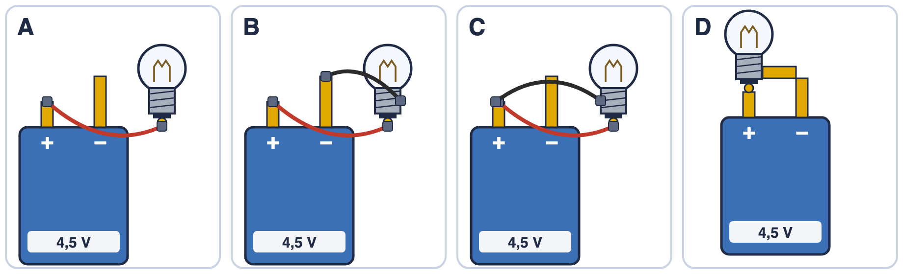
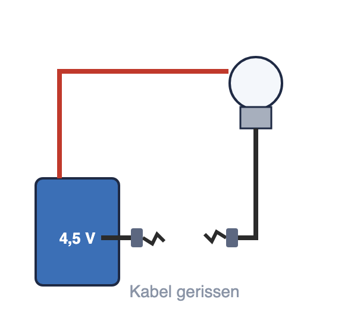
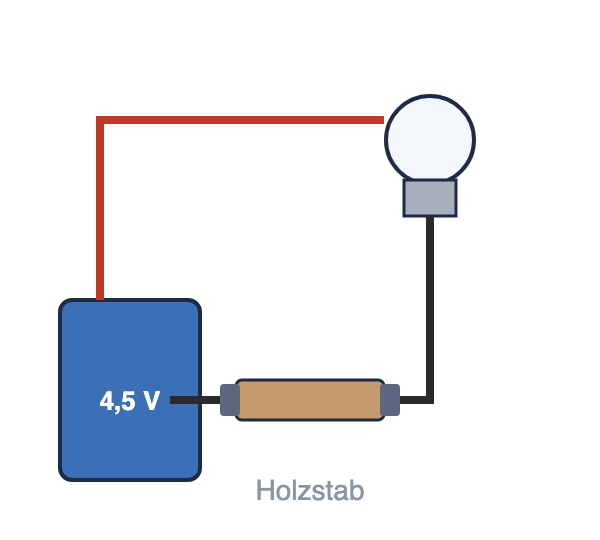
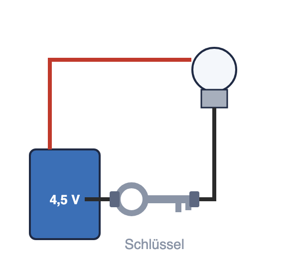

Wo sind wir? A Ladung und Stromkreis · B Stromstärke und Spannung · C Schaltungen · D Widerstand · E Energie und Kosten · F Wirkungen und Gefahren
Wie bringst du das Lämpchen zum Leuchten?
Das Wichtigste 1. Ein Lämpchen leuchtet nur in einem _____________________ Stromkreis: vom einen Pol der Batterie durch das Lämpchen zum anderen Pol. 2. Das Lämpchen hat _________ Anschlüsse: das Gewinde und den Fußkontakt. An jeden muss eine Leitung. 
| Bauteil | Aufgabe im Stromkreis | | Energiequelle (Batterie) | liefert die Energie | | Leitung (Kabel) | verbindet die Bauteile zu einem __________ | | Energiewandler (Lämpchen) | wandelt elektrische Energie in __________ und Wärme um |
3. Leiter lassen den Strom durch: alle ______________ und Graphit (Bleistiftmine). Isolatoren (Nichtleiter) lassen ihn nicht durch: Kunststoff, Holz, __________, Papier, Glas. Ein Kabel ist innen aus Kupfer (Leiter) und außen aus Kunststoff (Isolator). |
Was steckt in der Taschenlampe?

Wenn man eine Taschenlampe aufschraubt, findet man Batterien, eine Feder, ein Lämpchen und ein Metallröhrchen. Was davon braucht man, damit es leuchtet – und wie muss es verbunden sein?
Was glaubst du?
✎ allein · ankreuzen und begründen · bevor ihr es ausprobiert
Welche Lämpchen leuchten? Kreuze an und begründe eine deiner Antworten.

| A | B | C | D |
| leuchtet | ☐ | ☐ | ☐ | ☐ |
| leuchtet nicht | ☐ | ☐ | ☐ | ☐ |
Ich glaube, … leuchtet (nicht), weil …
________________________________________________
________________________________________________
Versuch 1: Bring das Lämpchen zum Leuchten
✎ zu zweit · ins Skript · Material: Kiste Elektrizität (Flachbatterie 4,5 V, Lämpchen ohne Fassung, 2 Krokokabel)
Baut A, B, C und D nach. Notiert, ob das Lämpchen leuchtet.
⚠ Verbinde nie die beiden Pole direkt mit einem Kabel – die Batterie wird heiß.
| Das beobachte ich | A | B | C | D |
| leuchtet | ☐ | ☐ | ☐ | ☐ |
| leuchtet nicht | ☐ | ☐ | ☐ | ☐ |
Stimmt deine Vorhersage? ☐ ja ☐ teilweise ☐ nein
Versuch 2: Leitet das?
✎ zu zweit · ins Skript · Material: Tütchen „Leitet das?“
Baut den Kreis aus B. Löst ein Kabel vom Lämpchen und klemmt jeden Gegenstand zwischen Kabel und Lämpchen. Kreuzt zuerst eure Vermutung an, dann testet.
| Gegenstand | Vermutung: leitet | Beobachtung: leitet |
| Büroklammer | ☐ ja ☐ nein | ☐ ja ☐ nein |
| Alufolie | ☐ ja ☐ nein | ☐ ja ☐ nein |
| Münze | ☐ ja ☐ nein | ☐ ja ☐ nein |
| Bleistiftmine | ☐ ja ☐ nein | ☐ ja ☐ nein |
| Radiergummi | ☐ ja ☐ nein | ☐ ja ☐ nein |
| Holzstab | ☐ ja ☐ nein | ☐ ja ☐ nein |
| Kunststofflineal | ☐ ja ☐ nein | ☐ ja ☐ nein |
| Papier | ☐ ja ☐ nein | ☐ ja ☐ nein |
Jetzt du
✎ allein
a) Leuchtet das Lämpchen? Kreuze an.
 Das Kabel ist gerissen. ☐ leuchtet
☐ leuchtet nicht |  In der Lücke steckt ein Holzstab. ☐ leuchtet
☐ leuchtet nicht |  In der Lücke steckt ein Schlüssel. ☐ leuchtet
☐ leuchtet nicht |
b) Warum ist ein Kabel innen aus Kupfer und außen aus Kunststoff? Erkläre.
Hilfe: Checkliste und Satzanfänge →
________________________________________________
________________________________________________
________________________________________________
________________________________________________
________________________________________________
Zurück zur Frage
✎ allein · ein Satz
Wie bringst du das Lämpchen zum Leuchten? Schreibe einen Satz mit geschlossener Stromkreis und zwei Anschlüsse.
________________________________________________
________________________________________________
________________________________________________
________________________________________________
Neue Wörter | So sagt man im Alltag | So sagt man in Physik | | „Der Strom ist an.“ | Der Stromkreis ist geschlossen. | | „Das Kabel ist kaputt.“ | Der Stromkreis ist unterbrochen. | | „Da geht Strom durch.“ | Das ist ein Leiter. Was keinen Strom durchlässt, ist ein Isolator. |
|
Schon fertig? Dann fang mit der Aufgabe mit Material auf der nächsten Seite an.